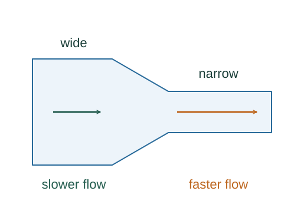

Derive continuity and Bernoulli’s equation
Continuity expresses conservation of mass. Bernoulli’s equation expresses mechanical-energy conservation for a small portion of ideal flowing fluid along a streamline.
What the symbols mean
A: flow cross section; v: local speed; p: pressure; y: elevation; ρ: fluid density.
When this applies
Steady, incompressible flow for Av = constant. Bernoulli additionally neglects viscosity and pumps or turbines between the two points; compare points along one streamline.
Developing the argument

Conserve transported mass
In time dt a stream tube passes volume Av dt through a section. In steady flow the mass entering equals the mass leaving.
Follow a small volume
Pressure upstream does positive work p₁dV while the downstream pressure opposes the motion and does −p₂dV. The net pressure work changes kinetic and gravitational energy.
Apply the work–energy balance
The same mass dm = ρdV moves between the locations. Write its energy changes and divide by dV.
A closer lookWhy does work become a change of kinetic energy? ↗Rearrange the balance
Collect the quantities belonging to each endpoint. All terms have units of pressure, equivalently energy per volume.
A worked example
In a horizontal ideal pipe, if water speeds up from 2 to 4 m/s, its pressure falls by ½(1000)(16 − 4) = 6000 Pa.
Derivation behind this calculation ↗A point to keep straight
A faster speed does not imply lower pressure in arbitrary flows. Apply the stated energy assumptions and compare appropriate points.
Check the assumptions and derivation ↗